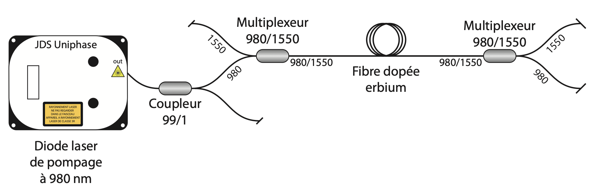

Découvrez mes réalisations en télécommunications, hyperfréquences, photonique et gestion de projets techniques. Chaque projet reflète mon engagement pour l'innovation et l'excellence technique.
01
Modélisation Ray Tracing 3D
Propagation Radio en Milieu Urbain
Ingénieur Modélisation Radio
Modélisation des phénomènes de propagation en milieu urbain dense sous MATLAB.
Analyse Ray Tracing 3D à 23 GHz avec calcul d'atténuation et optimisation d'implantation d'antennes.
Conception et simulation Hyperfréquences 23/80 GHz
Ingénierie RF & Hyperfréquences
Conception et optimisation d'une antenne Cassegrain bi-bande pour liaisons faisceaux hertziens.
Implémentation de Carrier Aggregation et simulations électromagnétiques sous CST Studio Suite.
Conception, simulation et optimisation des liaisons radio 5G (23/80 GHz) avec ATOLL et Séria.
Coordination d'équipes multidisciplinaires et suivi selon la méthodologie Agile pour le déploiement réseau.
Industrialisation du processus de démontage des équipements Faisceaux Hertziens obsolètes chez Orange France.
Mise en place d'une méthodologie Agile/Scrum combinée au Lean Management pour optimiser les gains financiers (OPEX)
et environnementaux (RSE). Réduction de l'empreinte carbone et standardisation des processus inter-régionaux.
Étude pratique des systèmes RADAR incluant la configuration mono-statique,
les calculs de portée et de gain d'antennes. Mesures sur analyseur de spectre
pour caractériser les performances en réception et émission. Calibration et
utilisation d'équipements professionnels pour la mesure de diagrammes de rayonnement.
📡 Configuration
RADAR mono-statique
🎯 Portée calculée
1.8 km (15 dBm)
📊 Gain antenne
13.15 dBi mesuré
📐 Plan de masse
Surface optimisée
Rohde & SchwarzAnalyseur de spectreAntennes directionnellesBilan de liaisonFormules de FriisMATLAB
2024 - 2025
02
Analyse Front-End RF et Non-linéarités
Caractérisation de chaînes de réception hyperfréquences
Ingénieur RF - Mesures et Analyse
Étude pratique d'une chaîne Front-End RF incluant synthétiseur de fréquence,
mélangeur et filtre passe-bande. Mesures des phénomènes de conversion de fréquence,
analyse des produits d'intermodulation et caractérisation des non-linéarités.
Utilisation d'analyseur de spectre pour la validation des performances.
Couplage et diaphonie dans les circuits électroniques
Ingénieur CEM - Mesures et Analyse
Analyse des phénomènes de compatibilité électromagnétique incluant le couplage
par impédance commune et la diaphonie inductive. Mesures pratiques sur circuits
imprimés pour quantifier les interférences. Calcul des impédances de câblage
et validation expérimentale des modèles théoriques.
📏 Inductance
0.25 μH (20 cm)
🔌 Impédance
Zc = 0.1 Ω
📊 Diaphonie
-30 à -50 dB
⚡ Blindage
> -30 dB atténuation
Tektronix OscilloscopeGénérateur de fonctionsSondes courantCouplage EMPlans de masseNormes CEM
2024 - 2025
04
Caractérisation de Circulateurs RF
Mesures de paramètres S et adaptation d'impédance
Ingénieur Hyperfréquences - Instrumentation
Mesure et caractérisation de circulateurs hyperfréquences à l'analyseur de réseau
vectoriel (VNA). Analyse des paramètres S pour évaluer l'isolation, l'adaptation
et les pertes d'insertion. Étude comparative entre transmission directe et inverse
sur différentes configurations de ports.
📡 Fréquence
2.6 GHz (bande S)
🔄 Isolation
S21 < -20 dB
📊 ROS
1.02 (optimal)
⚡ Pertes
-0.22 dB
VNAParamètres SCirculateur 3 portsCalibration Full 2 PortsSmith ChartAdaptation 50Ω
2024 - 2025
05
Transmission sans Fil - Systèmes RFID
Modulations ASK/FSK et protocoles ISO 14443
Ingénieur Télécommunications - Transmission de données
Étude d'un système RFID passif utilisant un tag communiquant avec un lecteur
via induction électromagnétique. Analyse des modulations d'amplitude (ASK)
et de fréquence (FSK), décodage des trames de données et mesure des signaux
sur oscilloscope. Validation du protocole de communication ISO 14443.
📡 Fréquence
13.56 MHz
📊 Modulations
ASK et FSK
🔐 Protocole
ISO 14443 Type A
⚡ Codage
Manchester/Miller
RFID passifISO 14443ASK/FSKOscilloscopeCouplage inductifCodage Manchester
2024 - 2025
01
Laser à Fibre Dopée Erbium
Conception et caractérisation de cavités laser
Ingénieur Photonique - Lasers
Réalisation et étude complète de lasers à fibre dopée erbium en configurations linéaire et anneau.
Optimisation de cavités avec miroirs métalliques et réseaux de Bragg (réflectivité 80-90%).
Caractérisation dynamique avec observation du phénomène de spiking et mesure du temps de relaxation.
Étude du battement intermodal et analyse spectrale fine. Comparaison des performances entre
configurations bidirectionnelle et unidirectionnelle avec isolateur optique.
💡 Configuration
Linéaire & Anneau
🔍 Réflectivité FBG
80-90%
📊 Largeur spectrale
0.09 nm mesuré
⚡ Pompage
980 nm / 100 mA
Laser EDFARéseaux de BraggCavité Fabry-PérotPompage 980nmSpectroscopie optiqueAnalyse temporelle
2024 - 2025

02
Amplificateurs Optiques EDFA
Amplification à fibre dopée Erbium
Ingénieur Systèmes Optiques
Caractérisation d'amplificateurs à fibre dopée Erbium (EDFA) pour systèmes WDM.
Mesures de gain, facteur de bruit et puissance de saturation. Analyse de la bande C
(1530-1565 nm), optimisation du pompage et étude des non-linéarités.
📈 Gain
30 dB @ 1550 nm
🔊 NF
4.5 dB
⚡ Puissance pompe
980 nm / 200 mW
📊 Saturation
+17 dBm
EDFAFibre dopée Er3+Pompage 980 nmWDMASEOSNR
2024 - 2025
03
Caractérisations Spectrales par Méthode Hétérodyne
Mesure de largeur de raie laser haute précision
Ingénieur Métrologie Optique
Caractérisation spectrale fine de lasers DFB par méthodes hétérodyne et auto-hétérodyne.
Mesure de largeur de raie (1,67 MHz à 5 MHz selon configuration), analyse de battement
entre deux lasers, et étude de la cohérence temporelle. Vérification expérimentale de la
loi de Schawlow-Townes reliant largeur de raie et puissance de sortie. Détermination de
la largeur de raie de cavité Fabry-Pérot passive (69,6 MHz).
Modélisation et simulation numérique complète d'amplificateurs à fibre dopée erbium sous MATLAB.
Résolution d'équations différentielles ordinaires pour la dynamique temporelle des systèmes à 3 niveaux.
Étude de l'inversion de population, optimisation de la longueur de fibre et simulation de configurations
co-propagative et contra-propagative. Validation de la loi de Schawlow-Townes et calcul des paramètres
de cavité passive.
💻 Outil
MATLAB/Simulink
📊 Configs simulées
Booster & LNA
📏 Longueur optimale
23 m (Booster)
⚡ Gain simulé
30+ dB
MATLABODE SolverSystèmes 3 niveauxEDFAInversion de populationOptimisation numérique


Port1.png)
_Port1.png)